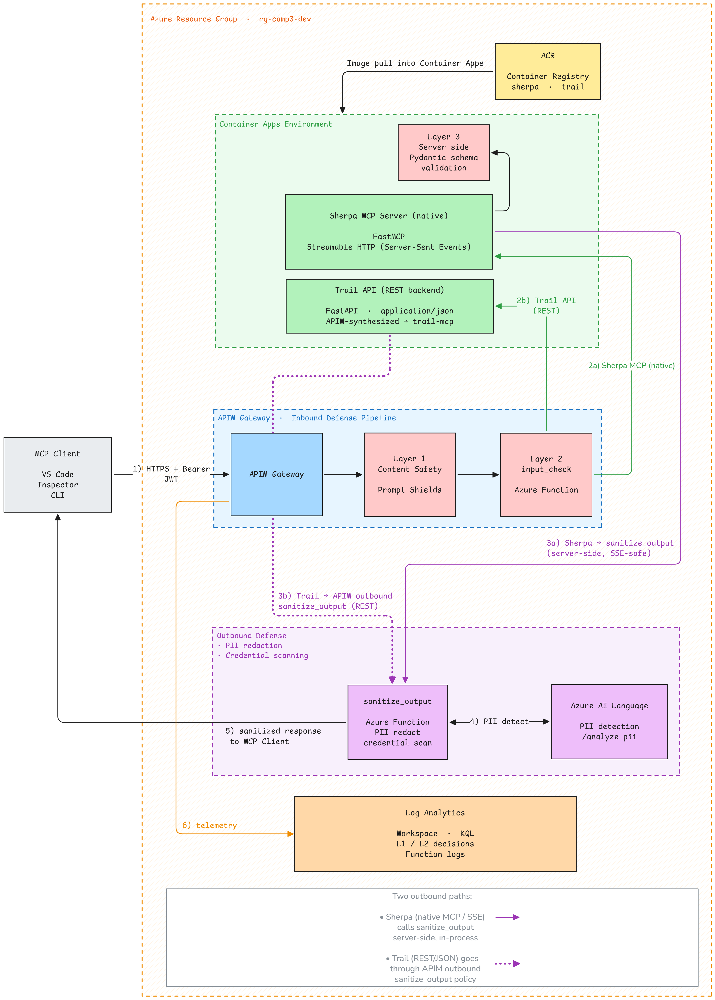

Input validation, output sanitization, and data-handling defenses for MCP tools.
Confirm that both vulnerabilities are now fixed by running the same exploits from Section 1.
What You Built¶
You've implemented defense-in-depth I/O security for MCP servers with a split architecture that handles both real and synthesized MCP patterns:

Key Insight: Native MCP servers using Streamable HTTP (like sherpa-mcp with FastMCP) always return Content-Type: text/event-stream, making APIM outbound policies unreliable. The solution is server-side sanitization, where the MCP server calls the sanitize-output Function directly before returning data, controlled by the SANITIZE_ENABLED environment variable. For REST APIs (like trail-api), APIM outbound policies work normally because the response is application/json.
Validate 1: Injection Attacks Blocked
Run the same injection attacks from Section 1. This time, they should be blocked:
Expected results:
Test 1: Shell Injection
Status: 400 Bad Request
Response: {
"error": "Request blocked by security filter",
"reason": "Shell metacharacter detected",
"category": "shell_injection"
}
Test 2: Path Traversal
Status: 400 Bad Request
Response: {
"error": "Request blocked by security filter",
"reason": "Directory traversal (../) detected",
"category": "path_traversal"
}
Test 3: SQL Injection
Status: 400 Bad Request
Response: {
"error": "Request blocked by security filter",
"reason": "SQL boolean injection detected",
"category": "sql_injection"
}
Test 4: Safe Request (should pass)
Now validate the Trail MCP server too:
Layer 2 is successfully detecting and blocking injection attacks!
Validate 2: PII Redacted in Responses
What is PII redaction?
Azure AI Language's PII detection identifies:
| Category | Examples |
|---|---|
| PersonName | John Smith, Jane Doe |
| john@example.com | |
| PhoneNumber | 555-123-4567, (555) 123-4567 |
| USSocialSecurityNumber | 123-45-6789 |
| Address | 123 Main St, Denver, CO 80202 |
| CreditCardNumber | 4111-1111-1111-1111 |
| And many more... | DateOfBirth, IPAddress, etc. |
The sanitize_output function calls Azure AI Language, then replaces each detected entity with [REDACTED-Category].
The validation script tests PII redaction on both MCP servers. Run it to confirm sensitive data is now masked:
Test 1: Trail API (trail-mcp → trail-api sanitization)
{
"permit_id": "TRAIL-2024-001",
"holder_name": "[REDACTED-PersonName]",
"email": "[REDACTED-Email]",
"phone": "[REDACTED-PhoneNumber]",
"ssn": "[REDACTED-USSocialSecurityNumber]",
"address": "[REDACTED-Address]"
}
Test 2: Sherpa MCP (direct outbound sanitization)
{
"guide_id": "guide-002",
"name": "[REDACTED-PersonName]",
"email": "[REDACTED-Email]",
"phone": "[REDACTED-PhoneNumber]",
"ssn": "[REDACTED-USSocialSecurityNumber]",
"address": "[REDACTED-Address]"
}
Both responses have the same structure, but all PII is redacted! This validates that:
- sherpa-mcp: Output sanitization works in the MCP policy (real MCP proxy)
- trail-mcp: Output sanitization works via trail-api (synthesized MCP)
Security Controls Summary¶
| Control | What It Does | Applied To | OWASP Risk Mitigated |
|---|---|---|---|
| OAuth (mcp.access scope) | Token validation with scope check | All APIs | MCP07 (Insufficient Authentication & Authorization) |
| Content Safety (L1) | Harmful content detection | All APIs | MCP06 (partial) |
| input_check (L2) | Prompt/shell/SQL/path injection | All APIs | MCP05, MCP06, MCP03 (defense-in-depth against poisoned tool payloads) |
| sanitize_output (L2) | PII redaction, credential scanning | sherpa-mcp (server-side), trail-api (APIM) | MCP01 (credential scanning), MCP10 (PII over-sharing) |
| Server validation (L3) | Pydantic schemas, regex patterns | MCP servers | Defense in depth |
Key Learnings¶
Defense in Depth
No single layer catches everything:
- Content Safety — Great for hate/violence, misses injection
- Regex patterns — Great for injection, misses semantic attacks
- AI detection — Great for PII, needs training data
- Server validation — Last resort, but attackers are inside
Layer them together for comprehensive protection.
MCP Architecture Matters
Real vs Synthesized MCP servers require different sanitization strategies:
- Real MCP (sherpa-mcp): FastMCP always uses
text/event-stream→ server-side sanitization - Synthesized MCP (trail-mcp): APIM controls SSE stream → sanitize the REST backend instead
- REST API (trail-api): Standard JSON responses → APIM outbound sanitization
Key Insight: Don't assume APIM outbound policies can modify all response types. Streamable HTTP's SSE format requires sanitization to happen before the response enters the transport layer.
Fail Open vs Fail Closed
The sanitize_output function fails open — if Azure AI Language is unavailable, the original response passes through. This prioritizes availability over security.
In high-security environments, consider failing closed instead:
Understanding Fail-Open: A Security Trade-off
When the sanitize_output function can't reach Azure AI Language (network issue, quota exceeded, service outage), it has two choices:
Fail Open (current behavior): - Return the original response unchanged - Users get their data, but PII might slip through - Prioritizes availability over security
Fail Closed (alternative): - Return an error (503 Service Unavailable) - Users can't proceed until the service recovers - Prioritizes security over availability
Which should you choose?
It depends on your threat model and business requirements:
| Scenario | Recommendation |
|---|---|
| Public API with sensitive data | Fail closed - block unknown responses |
| Internal tool with low PII risk | Fail open - prioritize uptime |
| Healthcare/Financial data | Fail closed - compliance requires it |
| Demo/Workshop environment | Fail open - learning trumps security |
The Camp 3 function fails open because we're in a learning environment. In production, you'd likely want fail-closed for endpoints that handle sensitive data.
To implement fail-closed, change the exception handler:
Pattern Maintenance
Injection patterns evolve. The injection_patterns.py file should be:
- Regularly updated with new attack patterns
- Tested against known bypass techniques
- Tuned to minimize false positives
- Documented with OWASP risk mappings
Server-Side Validation (Layer 3) — Optional¶
The MCP servers in Camp 3 include Pydantic validation as the last line of defense:
from pydantic import BaseModel, Field
class PermitRequest(BaseModel):
trail_id: str = Field(..., pattern=r'^[a-z]+-[a-z]+$')
hiker_name: str = Field(..., min_length=2, max_length=100)
hiker_email: str = Field(..., pattern=r'^[a-zA-Z0-9._%+-]+@...')
planned_date: str = Field(..., pattern=r'^\d{4}-\d{2}-\d{2}$')
group_size: int = Field(default=1, ge=1, le=12)
This validation runs inside the MCP server — if an attacker bypasses Layers 1 and 2, Pydantic still rejects malformed input.
Cleanup¶
When you're done with Camp 3, remove all Azure resources:
Optional: Delete the Entra ID applications:
What's Next?¶
Camp 3 Complete!
You've implemented comprehensive I/O security for MCP servers!
Your MCP servers now have layered input validation and output sanitization. Next, you'll add monitoring and incident response so you can detect, alert on, and respond to security events in real time.